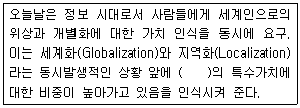
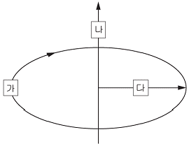

컬러리스트산업기사 (2012-08-26 기출문제)
1과목: 색채심리
1. 다음 중 색채의 배색 효과에 있어서 가장 부드럽고 온화한느낌을 갖는 색채배색은?
- 톤온톤 배색
- 세퍼레이션 배색
- 포 카마이외 배색
- 트리콜로 배색
(정답률: 알수없음)

2. 다음 중 색채기호와 연상 내용이 옳은 것은?
- N9 : 신비, 불안
- N2 : 평범, 청정
- N6 : 소극적, 고상
- 5GY : 기쁨, 강렬
(정답률: 알수없음)
3. 색에서 느껴지는 미각의 느낌이 잘못 연결된 것은?
- 달콤한 맛 - 체리 핑크
- 매운 맛 - 진한 파랑과 브라운
- 신맛 - 녹색기미를 띤 노랑
- 짠맛 - 연한 파랑과 회색의 배색
(정답률: 80%)
4. TV리모트 컨트롤러의 효과적인 색채계획 시 가장 고려해야할 것은?
- 기능 정보
- 보편적 색채
- 상징적 의미
- 선호색
(정답률: 82%)
5. 다음 배색에 대한 설명이 틀린 것은?
- 명확하고 명쾌한 배색을 위해서는 명도차를 크게 하여배색한다.
- 유사한 색상으로 배색할 때에는 명도차, 채도차를 비슷하게하여 조화되게 한다.
- 채도차가 큰 배색에서는 색의 연적을 조절하여 안정된느낌을 갖도록 한다.
- 화려하고 강렬한 느낌의 배색을 위해서는 색상차를 크게하여 배색한다.
(정답률: 알수없음)
6. 파버 비렌의 이론에서 녹색에 해당하지 않는 것은?
- 긍정적 연상으로 채소경작, 동정심, 대지의 풍요, 번창의의미를 지닌다.
- 기독교에서는 신의 색, 자연의 영속, 죽음을 넘어선 삶의힘 등의 의미를 지닌다.
- 부정적 연상으로 승화, 순교, 회개의 의미를 지닌다.
- 불교 문화권이나 중국 문화권에서는 나무의 의미를 지닌다.
(정답률: 알수없음)
7. 디자인 원리 중 일정한 리듬감을 표현하기에 가장 적합한배색기법은?
- 테마컬러를 이용한 악센트 배색
- 점증적으로 변하는 그라데이션 배색
- 주조색, 보조색, 강조색의 면적 분할에 따른 배색
- 중명도, 중채도를 이용한 토널 배색
(정답률: 73%)
8. 색채의 상징적 의미가 사용되는 분야가 아닌 것은?
- 관료의 복장
- 기업의 C.I.P
- 안내 픽토그램
- 오방색의 방위
(정답률: 42%)
9. 무채색, 금색, 은색 등의 색을 삽입하여 배색의 미적 효과를높일 수 있는 배색은?
- 반대색상 배색
- 톤온톤 배색
- 톤인톤 배색
- 세퍼레이션 배색
(정답률: 80%)
10. 일반적인 색채 선호 경향으로 틀린 것은?
- 두뇌형 - 녹색
- 근육형 - 빨간색
- 이기적인 형 - 파란색
- 사교적인 형 - 주황색
(정답률: 알수없음)
11. 인체의 차크라(chakra) 영역으로 심장부를 나타내며 사랑을의미하는 색은?
- 빨강
- 주황
- 녹색
- 보라
(정답률: 알수없음)
12. 다음 배색 중에서 주조색과 보조색이 유사색 배색이고, 여기에 강한 악센트를 주기 위해서 주조색과 대조되는 색으로강조색을 사용한 것은?
- 노란색 상의에 베이지색 하의를 입고 짙은 파란색 벨트를착용하였다.
- 회색 벽지에 천연 나무색 바닥재를 깔고 검정색 가구를 배치하였다.
- 어두운 빨간색 상의에 어두운 파란색 하의를 입고 선명한노란색 벨트를 착용하였다.
- 연한 하늘색 벽지에 밝은 노란색 바닥재를 깔고 천연 나무색 가구를 배치하였다.
(정답률: 알수없음)
13. 연령이 낮을수록 원색계열과 밝은 톤을 선호하다가 성인이되면서 단파장의 파랑, 녹색을 점차 좋아하게 되는 색채선호도 변화의 이유는?
- 자연환경의 차이
- 기술습득의 차이
- 인문환경의 영향
- 사회적 일치감 증대
(정답률: 알수없음)
14. 색채 선호도의 일반적 원리에 관한 설명 중 틀린 것은?
- 성별과 연령에 따라 차이가 있다.
- 지역 및 문화적 영향을 받는다.
- 구체적 대상에 따른 선호도 차이는 없다.
- 선호, 비선호는 숫자처럼 확실히 구별되기 보다는 정도의차이가 더 중요하다.
(정답률: 알수없음)
15. 안전 표지색의 색채연상 및 표시 내용이 틀린 것은?(파장 - 색채 연상 - 표시내용의 순임)
- 750nm - 불 - 금지, 정지
- 650nm - 따뜻함 - 명랑, 위험
- 600nm - 활발 - 주의, 위험
- 550nm - 냉정 - 구호, 진행
(정답률: 알수없음)
16. 대기시간이 긴 공항 대합실의 기능적 면을 고려할 때 가장적합한 것은?
- 파란색 계열
- 노란색 계열
- 녹색 계열
- 빨간색 계열
(정답률: 알수없음)
17. 색채의 심미적 효과에 대한 내용과 관계가 먼 것은?
- 색채조화란 2개 이상의 배색으로 보는 사람들에게 즐거운감정을 주는 미적효과를 말한다.
- 색의 기호는 여러 가지 상황이나 조건에 따라 차이가 있다.
- 고채도 끼리의 배색은 눈에 띄므로 색채배색 시 가장 많이사용한다.
- 하나의 색만으로 의미나 상징, 조화를 이루는 것은 아니다.
(정답률: 알수없음)
18. 올림픽 마크에 나타나는 오륜의 상징색과 지역의 연결이 틀린 것은?
- 청색 - 유럽
- 적색 - 아메리카
- 녹색 - 아프리카
- 황색 - 아시아
(정답률: 알수없음)
19. 한 지역의 지리적, 풍토적 자연환경과 인종적 배경이 그지역사람들의 색채선호도를 좌우한다면 이것은 색채가지니고 있는 어떤 성격 때문인가?
- 문화성
- 기능성
- 다양성
- 심미성
(정답률: 알수없음)
20. 색채를 조절할 때 기능을 최고도로 발휘할 수 있도록 색을선택 부여하는 효과와 비교적 관계가 먼 것은?
- 명시성
- 기억성
- 전달성
- 심미성
(정답률: 58%)
2과목: 색채디자인
21. 환경디자인에 있어 경관에 대한 설명 중 틀린 것은?
- 경관은 원경, 중경, 근경으로 나누어진다.
- 동적 경관은 시퀀스(Sequence), 정적 경관은 신(Scene)으로표현된다.
- 경관은 공간적 연속성으로만 파악해야 한다.
- 경관 디자인은 지역 특성을 반영할 때 다양성이 확보된다.
(정답률: 알수없음)
22. 보기의 ( )에 적합한 용어는?

- 전통성
- 문화성
- 지속가능성
- 친자연성
(정답률: 70%)
23. 제품의 라이프사이클을 순서대로 나열한 것은?
- 성숙기 → 도입기 → 성장기 → 쇠퇴기
- 도입기 → 성장기 → 성숙기 → 쇠퇴기
- 쇠퇴기 → 도입기 → 성숙기 → 성장기
- 도입기 → 성숙기 → 성장기 → 쇠퇴기
(정답률: 알수없음)
24. 디자인의 요소인 문화성의 비중이 높아지고 있는 원인으로볼 수 없는 것은?
- 세계화
- 국제화
- 합리와
- 지역화
(정답률: 알수없음)
25. 디자인의 분류 중 사회와 자연을 연결하는 장치로서의디자인은?
- 인테리어
- 환경디자인
- 시각디자인
- 건축디자인
(정답률: 알수없음)
26. 다음 중 구매 충동 및 판매 촉진의 가장 큰 역할을 하는 시각적 요소는?
- 질감
- 기능
- 색채
- 재료
(정답률: 92%)
27. 다음 중 색채계획에서 기업색채의 선택 시 주안점으로 틀린것은?
- 기업 이념과 실체에 맞는 이상적 이미지를 나타내는 색
- 눈에 띄기 쉽고 타사와 차별성이 뛰어난 색
- 여러 가지 소재의 재현보다는 관리하기 쉬운 색
- 불쾌감을 주거나 경관을 손상시키지 않고 주위와 조화되는색
(정답률: 알수없음)
28. 색채를 효율적으로 활용하기 위해 계획, 조직, 지휘, 조정,통제하는 활동을 의미하는 것은?
- 색채관리
- 색채정책
- 색채개발
- 색채조사
(정답률: 알수없음)
29. 디자인 사조와 색채의 특징이 틀린 것은?
- 큐비즘의 대표적 작가인 파블로 피카소는 색상의 대비를적극적으로 사용하였다.
- 플럭서스에서는 회색조가 전반을 이루고 색이 있는 경우에는 어두운 색조가 주가 되었다.
- 팝아트는 부드러운 색조의 그라데이션이 특징이다.
- 다다이즘에서는 일반적으로 어둡고 칙칙한 색조가사용되었다.
(정답률: 알수없음)
30. 시장 세분화(Market Segmentation)의 방법이 아닌 것은?
- 연령, 성별, 수입, 직업별로 나누는 인구학적 세분화
- 지역, 도시크기, 인구밀도 등으로 나누는 지리적 세분화
- 문화, 종교, 사회 계층 등으로 나누는 사회 문화적 세분화
- 제품의 색상이나 외관 등에 의한 이미지 세분화
(정답률: 알수없음)
31. 색채계획에 관한 설명 중 가장 적합하지 않은 것은?
- 광고의 컬러는 광고내용, 즉 광고 메시지를 잘 전달해야 한다.
- 제품의 컬러는 지나친 장식을 피하고 기능과 목적에 충실해야 한다.
- 포장의 컬러는 소비자 구매의욕을 자극하고 디스플레이효과를 고려해야 한다.
- 환경의 컬러는 각각의 요소를 드러나게 해서 단조로움을피해야 한다.
(정답률: 75%)
32. 다음 중 멀티미디어 디자인을 가장 잘 설명한 것은?
- 매체가 쌍방향적이며 디자인의모든 가치 기준과 방향이철저히 사용자 중심으로 변화하고 있다.
- 텍스트, 이미지, 사운드, 애니메이션 및 동영상을 모두사용하여 만든 것을 디지털 콘텐츠라고 한다.
- 디지털 콘텐츠의 제작과정은 정보디자인 → 프로그래밍→ 인터페이스 디자인 → 인터렉션 디자인 순이다.
- 사용자에게 어떠한 상호 작용성을 부여할 것인가에 대해서출발하여 어떠한 부분을 어떠한 방법으로 조작하게 할 것인가를 정의하는 행위이다.
(정답률: 16%)
33. 이미지, 인상, 감정의 심리 효과를 측정하는 의미미분법(SD법 :Semantic Differential Method)을 개발한 사람은?
- 퍼스
- 굿맨
- 소쉬르
- 오스굿
(정답률: 82%)
34. 미용 디자인의 연출을 위해서 고려하는 개인 고유의 신체색에해당되는 것끼리 연결된 것은?
- 피부 - 눈동자 - 모발
- 피부 - 모세혈관 - 모발
- 모발 - 손톱 - 치아
- 치아 - 눈동자 - 손톱
(정답률: 알수없음)
35. 바우하우스의 교육과정과 거리가 먼 것은?
- 공작교육
- 추상교육
- 형태교육
- 예비조형교육
(정답률: 알수없음)
36. 디자인에 대한 설명 중 틀린 것은?
- 디자인의 미적가치는 실제 사용하는 과정에서 잘 작동하고기대되는 성능을 발휘하는 실용적 가치이다.
- 빅터 파파넥(Victor Papanek)은 디자인을 의미있는 질서를만드는 노력이라고 했다.
- 디자인은 인간 생활의 향상을 위한다는 점에서 문제해결방법이다.
- 오늘의 디자인 분야는 점차 상호 지식을 공유하는 토털(Total) 디자인이 되고 있다.
(정답률: 30%)
37. 화장품 회사가 30대를 타깃으로 주력상품의 브랜드를 효과적으로 광고할 때 가장 좋은 이미지 전달 광고는?
- P.O.P
- 잡지
- 라디오
- 신문
(정답률: 90%)
38. 메이크업에서 가장 기본이 되는 균형이 아닌 것은?
- 색의 균형
- 좌우 대칭의 균형
- 입체의 균형
- 부분과 전체와의 균형
(정답률: 60%)
39. 다음 중 키치문화의 성격과 내용이 잘못 연결된 것은?
- 일상 : 테마카페, 분장카페 등의 문화
- 혼재 : 신·구 문화가 동시에 존재
- 모방 : 연예인의 옷, 액세서리 등이 유행
- 향수 : 변화하는 사회에 대한 보상심리
(정답률: 50%)
40. 유기농 커피의 포장디자인을 위해 카키색을 디자인의 전체바탕색으로 하고 그 위에 매우 작은 크기의 브랜드 네임을흰색으로 배치하였다. 이 때 카키색의 역할은?
- 주조색
- 보조색
- 강조색
- 조화색
(정답률: 알수없음)
3과목: 섹채관리
41. 빛의 전하로 변화하는 스캐너 부속 광학 칩 장비 장치는?
- CEPS
- CCD
- LPI
- PPI
(정답률: 알수없음)
42. 42. 도료 중에서 가장 종류가 많으며, 일반적으로 내알칼리성으로 콘크리트나 모르타르의 마무리 도료로 쓰이는 것은?
- 천연수지 도료
- 플라스티졸 도료
- 수성 도료
- 합성수지 도료
(정답률: 55%)
43. 생활 조명의 적합한 조도(lx)가 틀린 것은?
- 식탁 위 : 200~500
- 독서실 : 500 ~ 1000
- 사무실 : 200 ~ 300
- 거실 : 100 ~ 200
(정답률: 42%)
44. 비트맵 이미지에 대한 설명이 틀린 것은?
- 축소, 확대, 회전 등으로 인한 이미지 손상이 없다.
- 사진합성이나 특수효과의 표현에 적합하다.
- 하나의 이미지는 픽셀들의 집합이다.
- 벡터 이미지에 비해 파일 크기가 상대적으로 크다.
(정답률: 알수없음)
45. 조색에 대한 설명으로 틀린 것은?
- 효과적인 재현을 위해서는 표준 표본을 3회 이상 반복측색하여 정확하게 파악해야 한다.
- 재현하려는 소재의 특성을 파악해야 한다.
- 베이스의 종류 및 성분은 색채 재현에 영향을 미치지 않는다.
- 염료의 경우에는 염료만으로 색채를 평가할 수 없고 직물에염색된 상태로 평가한다.
(정답률: 91%)
46. 색온도 보정 필터에 대한 설명 중 틀린 것은?
- 색온도 보정 필터에는 색온도를 내리는 블루계와 색온도를올리는 엄버계가 있다.
- 필터 중 흐린 날씨용, 응달용을 엄버계라고 한다.
- 필터 중 아침 저녁용, 사진 전구용, 섬광 전구용을 블루계라고 한다.
- 필터는 사용하는 필름과 촬영하는 광원에 색온도에 따라구분해서 사용한다.
(정답률: 알수없음)
47. 다음 중 자외선에 민감한 문화재나 예술작품, 열조사를 꺼리는 물건의 조명에 적합한 것은?
- 형광 램프
- 할로겐 램프
- 메탈 할라이드 램프
- LED 램프
(정답률: 42%)
48. 스캐너, 비디오카메라, 디지털카메라 등을 통해서 생성되어모니터나 TV화면에 디스플레이 되는 것은?
- CCD
- 래스터 영상
- 그래픽카드
- 벡터 그래픽 영상
(정답률: 알수없음)
49. 측색기 사용 시 정확한 색채 측정을 위해 교정에 이용하는 것은?
- 북창 주광
- 표준관측자
- 그레이 스케일
- 백색교정판
(정답률: 알수없음)
50. 다음 중 광택이 좋고 착색이 가능하여 고운 색채를 낼 수있으며 투명도가 높은 소재는?
- 금속 소재
- 섬유 소재
- 플라스틱 소재
- 양면 소재
(정답률: 알수없음)
51. 무조건 등색(isomerism)의 설명으로 옳은 것은?
- 어떠한 광원 아래에서도 등색이 성립한다.
- 보는 사람에 따라 다른 색으로 보이는 경우도 있다.
- 분광 반사율이 달라도 같은 색자극을 일으키는 현상이다.
- 육안으로 조색하는 경우에 성립하게 된다.
(정답률: 알수없음)
52. 한국산업표준 중 물체색의 색이름과 관련된 것은?
- KS A 0011
- KS A 0062
- KS A 3012
- KS C 8008
(정답률: 알수없음)
53. 색료의 호환성과 통용성을 확보하기 위한 색료표시 기준은?
- 컬러인덱스
- 색변이지수
- 연색지수
- 컬러 어피어런스
(정답률: 알수없음)
54. 다음 중 웹디자인에서 많이 사용하는 GIF 포맷 대체용으로개발된 비트맵 파일 포맷은?
- JPG
- TIFF
- PNG
(정답률: 60%)
55. 동일 조건으로 조명하여 한정된 동일 입체각 내에 물체에서반사하는 방사속(광속)과 완전 확산 반사면에서 반사하는방사속(광속)의 비는?
- 입체각 휘도율
- 방사 휘도율
- 방사 반사율
- 입체각 반사율
(정답률: 알수없음)
56. 인쇄잉크에 대한 설명이 옳은 것은?
- 락카 성분의 인쇄잉크가 일반적으로 사용된다.
- 잉크 건조시간이 오래 걸리는 히트세트잉크가 있다.
- 유성 그라비어 잉크는 환경오염을 줄이기 위해 고안되었다.
- 안료에 전색제를 섞으면 액체상태의 잉크가 된다.
(정답률: 알수없음)
57. 다음 중 광원의 분광적인 특성과 가장 관계가 없는 것은?
- 연색성(Rendition)
- 눈부심(Glare)
- 광원색(Color)
- 색채순응(chromatic Adaptation)
(정답률: 알수없음)
58. 다음 중 색온도가 가장 낮은 것은?
- 일출, 일몰시의 태양
- 구름 낀 하늘
- 정오의 태양
- 맑은 하늘
(정답률: 알수없음)
59. 색채측정 시, 일반측정 관측조건에 대한 약어인 d/8:e의 의미로 옳은 것은?
- 확산조명과 정반사 요소가 포함된 8* 관측
- 확산조명과 정반사 요소가 배제된 8* 관측
- 8* 원주의 조명과 수직 관측
- 수직조명과 8* 원주의 관측
(정답률: 55%)
60. 시료색 자극의 특정 무채색 자극(백색 자극)에서의 색도 차와휘도의 곱을 무엇이라고 하는가?
- 텍스쳐(Texture)
- 크로미넌스(Chrominance)
- 컬러어피어런스(Color Appearance)
- 플리커(Flicker)
(정답률: 알수없음)
4과목: 색채지각의이해
61. 눈의 구조 중 시신경의 통로로 어느 한 지점의 거리에서 색이나 형태를 지각하지 못하는 곳은?
- 간상체
- 중심와
- 맹점
- 망막
(정답률: 알수없음)
62. 보라색의 채도를 상대적으로 높게 표현하고 싶다면 배경색은어떤 색을 선택하는 것이 좋은가?
- 빨간색
- 파란색
- 청록색
- 회색
(정답률: 50%)
63. 다음 중 대비현상과 설명이 옳게 연결된 것은?
- 면적대비 : 동일한 색이라도 면적이 커지게 되면 명도가높아지고 채도가 낮아 보이는 현상
- 보색대비 : 보색이 되는 두색이 서로 영향을 받아 본래의색보다 채도가 높아지고 선명해지는 현상
- 명도대비 : 명도가 다른 두 색을 인접시켰을 때 서로의 영향을 받아 명도에 관계없이 모두 밝아 보이는 현상
- 채도대비 : 어느 색을 검은 바탕에 놓았을 때 밝게 보이고,흰 바탕에 놓았을 때 어둡게 보이는 현상
(정답률: 84%)
64. 동시대비에 대한 설명 중 틀린 것은?
- 검은색 배경 위에 회색이 흰색 배경 위의 회색보다 밝아보인다.
- 선명한 빨간색 배경 위의 흐린 빨강은 본래의 채도보다낮아 보인다.
- 색상대비는 유채색과 무채색 사이에서 더욱 뚜렷하게 느낄수 있다.
- 명도가 다른 두 색이 서로 대조가 되어 두 색간의 명도차가크게 보이는 현상을 명도대비라고 한다.
(정답률: 알수없음)
65. 다음 중 형광색과 관련이 있는 광선은?
- 적외선
- X선
- 자외선
- 라디오 파
(정답률: 알수없음)
66. 측색하여 재현한 단색만으로는 생동감 표현이 어려운 사람의피부, 자연의 나뭇잎 등에서 볼 수 있는 혼색 방법은?
- 감법혼색
- 병치혼색
- 가법혼색
- 회전혼색
(정답률: 70%)
67. 다음 중 감법혼색에 해당되지 않는 것은?
- 인쇄잉크의 혼색
- 무대조명의 혼색
- 물감의 혼색
- 페인트의 혼색
(정답률: 알수없음)
68. 다음 중 시인성이 가장 높은 배색은?
- 노란색 바탕에 흰색 글씨
- 흰색 바탕에 노란색 글씨
- 녹색 바탕에 회색 글씨
- 검정색 바탕에 노란색 글씨
(정답률: 알수없음)
69. 암순응이 되기 전에는 빨간색 꽃이 잘 보이다가 암순응이 되면 파란색 꽃이 더 잘 보이게 되는 현상은?
- 배졸드(Bezold) 현상
- 푸르킨예(Purkinje) 현상
- 프라운호퍼(Fraunhofer) 현상
- 영·헬름홀쯔(Young·Helmholtz) 현상
(정답률: 알수없음)
70. 부의 잔상에 대한 설명으로 옳은 것은?
- 원자극과 같은 정도의 밝기와 같은 색의 기미를 지속하는 것
- 어두운 곳에서 빨간 성냥불을 돌리면 길고 선명한 빨간원을그리는 현상
- 원자극이 선명한 파랑이면 밝은 보라색의 잔상이 보이는 것
- 수술 도중 피의 보색인 청록색이 어른거리는 현상
(정답률: 알수없음)
71. 눈의 구조 중 카메라의 조리개가 하는 것과 똑같이 빛의 유입을 조절하는 것은?
- 홍채
- 시신경
- 중심와
- 수정체
(정답률: 93%)
72. 빛에 대한 설명 중 옳은 것은?
- 분색된 단색광을 다시 프리즘을 통과시키면 다시 한 번분광된다.
- 자외선은 파장이 짧아 열선으로 사용된다.
- 가시광선은 인간을 기준으로 한 것이므로 일부 다른 동물은이 외의 것을 감지할 수도 있다.
- 적외선은 자외선보다 파장이 짧지만 높은 에너지를 방출한다.
(정답률: 알수없음)
73. 다음 중 주목성의 특징이 아닌 것은?
- 시인성이 높은 색은 주목성도 높아진다.
- 따뜻한 난색은 차가운 한색보다 주목성이 높다.
- 명도와 채도가 높은 색은 주목성이 높다.
- 분홍, 연두 같은 2차색 일수록 주목성이 높다.
(정답률: 80%)
74. 색의 진출과 후퇴 효과에 대한 설명으로 옳은 것은?
- 단파장의 색은 가깝게 보인다.
- 노랑과 같은 장파장의 색은 멀리 보인다.
- 한색은 가깝게 보이는 경향이 있다.
- 일반적으로 빨강, 주황색은 가깝게 보인다.
(정답률: 알수없음)
75. 다음 중 색채지각반응효과에서 명시성(Legibiligy)에 가장 큰영향을 미치는 속성은?
- 채도차이
- 명도차이
- 질감차이
- 색상차이
(정답률: 40%)
76. 다음 중 가장 강한 느낌을 주는 색은?
- 중명도의 채도가 높은 색
- 중명도의 채도가 낮은 색
- 명도가 높은 한색계의 색
- 명도가 낮은 난색계의 색
(정답률: 37%)
77. 직물의 혼색방법으로 옳은 것은?
- 안료, 회전혼색, 감법혼색
- 안료, 감법혼색, 병치혼색
- 염료, 감법혼색, 병치혼색
- 염료, 감법혼색, 회전혼색
(정답률: 알수없음)
78. 다음 중 한색 계열에 속하는 것은?
- 연두
- 보라
- 청록
- 자주
(정답률: 알수없음)
79. 어떤 두 색이 맞붙어 있을 때 그 경계선에서 일어나는 현상으로, 그 효과를 마하밴드라고도 하는 대비현상은?
- 보색대비
- 한난대비
- 계시대비
- 연변대비
(정답률: 70%)
80. 병원이나 역 대합실의 배색 중 지루함을 줄일 수 있는 색계열은?
- 빨강계열
- 청색계열
- 회색계열
- 흰색계열
(정답률: 알수없음)
5과목: 색채체계의이해
81. 다음 중 파란색을 가장 많이 포함하고 있는 것은?
- L* = 45, a* = 40, b* = 0
- L* = 70, c* = 15, h = 270
- L* = 35, a* = -40, b* = 15
- L* = 70, c* = 25, h = 90
(정답률: 알수없음)
82. 오정색 중 백색이 의미하는 방위는?
- 동
- 서
- 남
- 북
(정답률: 알수없음)
83. 한국 전통색의 톤 서술어가 틀린 것은?
- 순(純) - 선명한
- 진(眞) - 짙은
- 숙(熟) - 연한
- 회(灰) - 탁한/회
(정답률: 알수없음)
84. 이상적인 흑(BK), 이상적인 백(W), 이상적인 순색(C)의 요소를 가정하고 3색 혼합의 물체색을 체계화한 노벨 화학상을 수상한 물리학자는?
- 헤링
- 피셔
- 폴란스키
- 오스트발트
(정답률: 알수없음)
85. 문·스펜서의 색채조화론과 관련이 없는 것은?
- 동등의 조화
- 유사의 조화
- 불명료의 조화
- 대비의 조화
(정답률: 알수없음)
86. NCS 색체계는 빨강, 노랑, 녹색, 파랑 외에 두 가지를 추가하고 있다. 그 두 가지는?
- 흰색, 검정
- 흰색, 보라
- 보라, 검정
- 자주, 보라
(정답률: 알수없음)
87. 그림은 먼셀 색체계를 나타낸 것이다. (가), (나), (다)에 해당하는 속성이 순서대로 옳게 제시된 것은?

- 색상, 채도, 명도
- 명도, 채도, 색상
- 채도, 명도, 색상
- 색상, 명도, 채도
(정답률: 알수없음)
88. ISCC-NIST 색명법의 표기방법 중 영역부분에 대한 설명으로틀린 것은?
- 명도가 높은 것은 Light, Very Light로 구분한다.
- 채도가 높은 것은 Strong, Vivid로 구분한다.
- 명도와 채도가 함께 높은 부분을 Brilliant로 구분한다.
- 명도는 낮고 채도가 높은 부분을 Dark로 구분한다.
(정답률: 29%)
89. 혼색계에 대한 설명이 틀린 것은?
- 지각적으로 일정하게 배열되어 있다.
- 색표시 체계 간에 변환이 용이하다.
- 수치로 표기되어 변색, 탈색 등의 물리적 영향이 없다.
- CIE L*a*b*는 혼색계의 일종이다.
(정답률: 30%)
90. 다음 중 나머지 셋과 비교하여 색상의 차이가 가장 많이 나는 것은?
- S2060-Y10R
- S2⑤0-G90Y
- S2060-R90B
- S2⑤0-G60Y
(정답률: 알수없음)
91. 문·스펜서의 색채조화론은 어떤 색체계를 토대로 하고 있는가?
- 오스트발트 색체계
- 먼셀 색체계
- NCS 색체계
- PCCS색체계
(정답률: 알수없음)
92. 톤(Tone) 분류를 바탕으로 하는 색이름의 특성에 관한 설명 중 틀린 것은?
- 색채의 3속성에 의한 방법보다 색채조화를 훨씬 수월하게처리할 수 있다.
- 색상의 고유특성과 관계가 깊다.
- 명도와 채도 2개의 변수를 합쳐 1개의 변수로 정리한 것이다.
- P.C.C.S에서 사용되고 있다.
(정답률: 29%)
93. 먼셀 색체계에 대한 설명으로 옳은 것은?
- 색상, 명도, 뉘앙스의 3속성으로 표현된다.
- 우리나라 한국산업표준으로 사용된다.
- 헤링의 반대색설을 기초로 한다.
- 8색상을 기본으로 각각 3등분한 24색상환을 취한다.
(정답률: 34%)
94. CIE 색체계에 대한 설명으로 틀린 것은?
- 영·헬름홀쯔에 의한 적, 녹, 청의 3원색 이론에서 출발한다.
- 1931년 국제조명위원회에서 감법혼색의 원리에 의해서색을 표시한 방법이다.
- 어떤 빛에 의해서 일어나는 시신경의 흥분과 같은 양의 흥분을 일으킬 수 있는 3원색을 정하고, 그 혼합비율에의해 모든 색을 표시한다.
- XYZ 색체계라고도 부르는 것은 X·Y·Z라는 가상적 3색에대한 자극치를 기준으로 하기 때문이다.
(정답률: 47%)
95. Yxy 색체계에 대한 설명이 옳은 것은?
- 빛에 의해 일어나는 3원색(R,G,B)을 정하고, 그 혼색비율에 의한 색체계이다.
- 수학적 변환에 의해 도입된 가상적 원자극을 이용해서표색을 하고 있다.
- 색도도의 중심점은 백색점을 나타내고, 흰색에서 검정에이르는 무채색도 전부 그 점에 배치된다.
- 감법혼색의 실험결과로 만들어진 국제표준체계이다.
(정답률: 20%)
96. 다음의 NCS 표기 중 가장 빨간 색상을 나타내는 것은?
- R80B
- R60B
- R40B
- R20B
(정답률: 37%)
97. 다음 중 밝은 회색 띤(Light Grayish) 색채는?(단, KS 기준 색표시이다.)
- 5R 7/2
- 10YR 8/6
- 5B 5/4
- 7.5P 6/10
(정답률: 알수없음)
98. 현색계에 대한 설명이 틀린 것은?
- 색지각에 따라 분류되는 체계를 말한다.
- 조색, 검사 등에 적합한 오차를 적용할 수 있다.
- 조건등색과 광원의 영향을 많이 받는다.
- 형광색이나 고채도 염료의 경우 판단이 어렵다.
(정답률: 46%)
99. 저드(D.B.Judd)의 색채조화 원리가 아닌 것은?
- 질서의 원리
- 유사의 원리
- 동류의 원리
- 변화의 원리
(정답률: 50%)
100. CIE 표준 색체계의 기원이 된 색체계는?
- 맥스웰의 RGB
- 스펜서의 XYZ
- 로드의 LAB
- 비렌의 NCS
(정답률: 알수없음)